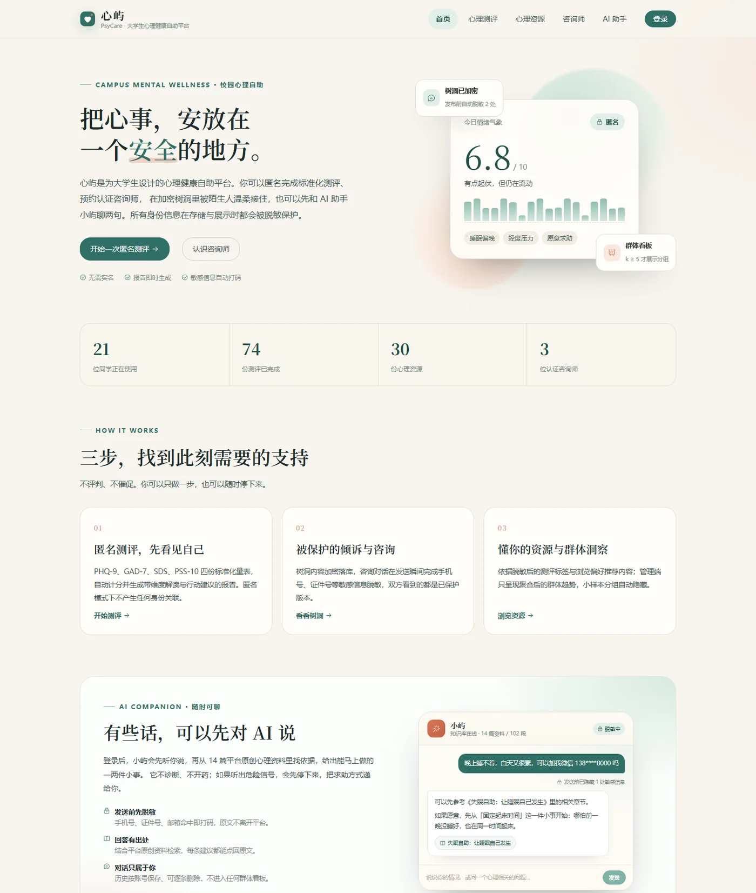

01 / 毕业设计
心屿 PsyCare
融合 Spring Boot 与数据脱敏的心理健康自助平台
面向高校学生的自助平台，把匿名测评、在线咨询、树洞倾诉、资源推荐与群体看板放进同一条隐私保护链路。 敏感字段加密落库，自由文本实时清洗，统计结果按 k-匿名聚合；AI 助手先脱敏、再检索、后生成。
- 10 套标准化量表，支持反向计分、标准分、风险分级与匿名报告。
- Spring Boot + Vue 3 + MySQL，WebSocket 实时咨询与 JWT 角色权限。
- BGE-M3 + Milvus + qwen 系列模型，14 篇原创资料 / 102 个切片，回答带来源。
